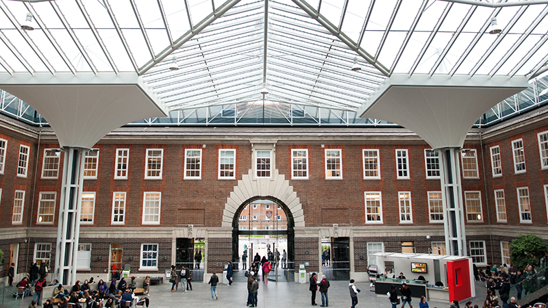

Acasă
Acasă Țări
Țări Catalog
Catalog Galerie foto
Galerie foto Experiente
Experiente Despre
DespreMiddlesex University London



Descriere
Scoala de Arta si Design de la Middlesex University formeaza o comunitate creativa, condusa de artisti profesionisti, designeri si teoreticieni care inspira si incurajeaza studentii intr-un cadru prietenos, artistic si deosebit de placut.
Middlesex University Business School ofera printre cele mai bune pregatiri in domeniul afacerilor, mangementului si dezvoltarii in Marea Britanie, o destinatie populara in randul studentilor din toata lumea. Programele oferite le dau studentilor ocazia de a se dezvolta pe plan profesional din punct de vedere etic, dar si holistic, in diverse organizatii si medii la nivel global aflate intr-o schimbare din ce in ce mai rapida.
The School of Health and Education de la Middlesex University ofera cursuri deosebite intr-o gama larga de domenii din educatie, sanatate, asistenta sociala, concentrandu-se sa ajute studentii si profesorii sa isi atinga potentialul si sa aduca o schimbare in lume – fie ca isi dezvolta cunostintele, deprind noi aptitudini sau conduc cercetari cu impact pozitiv asupra societatii.
Recunoscut la nivel international pentru abordarea inovativa in domeniul predarii, Facultatea de Drept de la Middlesex University reuneste in acelasi curriculum diverse domenii si creeaza profesionisti cu aptitudini diverse care lupta pentru dreptatea sociala. De la politica la legislatie, de la criminalistica la sociologie, prin filtrul justitiei si al dezvoltarii, cerceteaza factorii care impiedica egalitatea si oportunitatile, cu impact asupra vietii oamenilor.
The School of Media and Performing Arts de la Middlesex University. Oferind o gama variata de programe, de la Limba Engleza la Dans, se pune accentul pe creativitate, practica si corelarea practicii cu teoria pentru formarea unor specialisti la nivel inalt cu aptitudini care pot fi date mai departe, pregatind studentii pentru a activa in industriile creative contemporane.
The School of Science and Technology de la Middlesex University se axeaza pe ideea ca oamenii au un rol important in ingineria si tehnologia moderna. In cadrul Facultatii se incearca integrarea persoanelor atat la nivel individual, cat si social in toate domeniile si stiintele studiate.
Informații generale
Tara: Marea Britanie
Limba de predare: engleza
Ani de studiu: Bachelor: 3-4; Master: 1
Inceput an: septembrie
Burse: Da
Campusuri:Londra, Dubai, Mauritius
Aeroporturi:London, Heathrow
Cazare: 400-680 lire
Programe universitare:
Accounting and Finance
Advertising and Public Relations
Art and Design
Business and Mgmt.
Biomedical and Biological Sciences
Computing and IT
Creative Writing
Criminology
Dance, Music and Theatre Arts
English Literature and Language
Economics
Education
Engineering
Environmental and Public Health
Fashion
Film
Human Resource Mgmt.
Journalism
Translation Studies
Law
Marketing and Enterprise
Music and Performing Arts
Media
Psychology
Product Design and Engineering
Sociology
Sport, Exercise and Rehabilitation Science
Social Work
Tourism and Hospitality Mgmt.
Television Production
Programe de master:
Veterinary Nursing
Banking / International Finance
Chinese Medicine/ Choreography/Biomedical Science
Computer and Network Security/Business Information Technology/Software Engineering
Computer Science/ Networks
Design Engineering/ Manufacturing Mgmt.
Graphic Design
e-Marketing and Social Media
Environmental Pollution Control
Financial Mgmt./ Accounting
Fine Art/ Film
Human Rights and Business/ HR
International Tourism and Hospitality Mgmt.
Interior Architecture
International Relations
International Business Mgmt./Marketing
Business Enterprise and Entrepreneurship
LLM
MBA
Media and Communications Mgmt.
Midwifery/ Nursing
Mobile Telecommunication Engineering
Sonic Arts
Photography
Criminology/ Psychoanalysis/ Psychology
Sustainable Environmental Mgmt.
Translation, Global Supply Chain Mgmt.
Fashion
Sport and Exercise Science
Social Work
Psychology